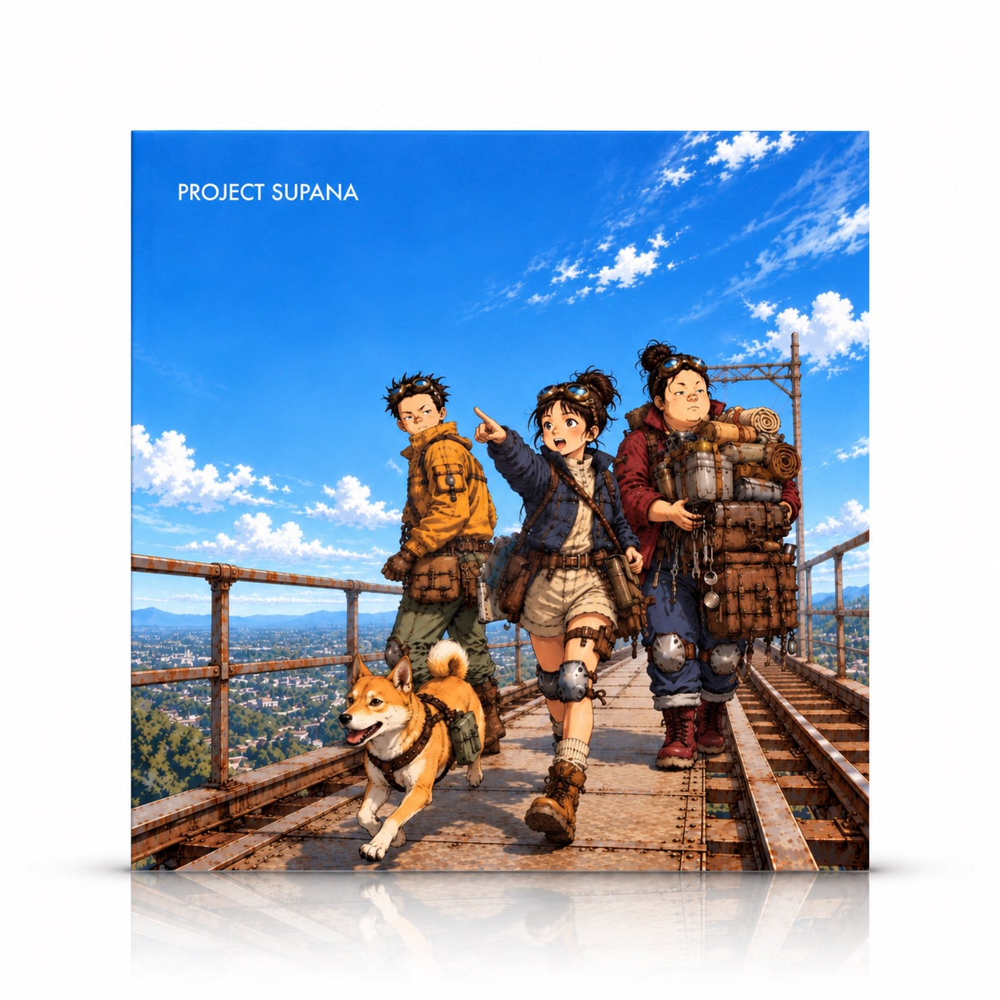
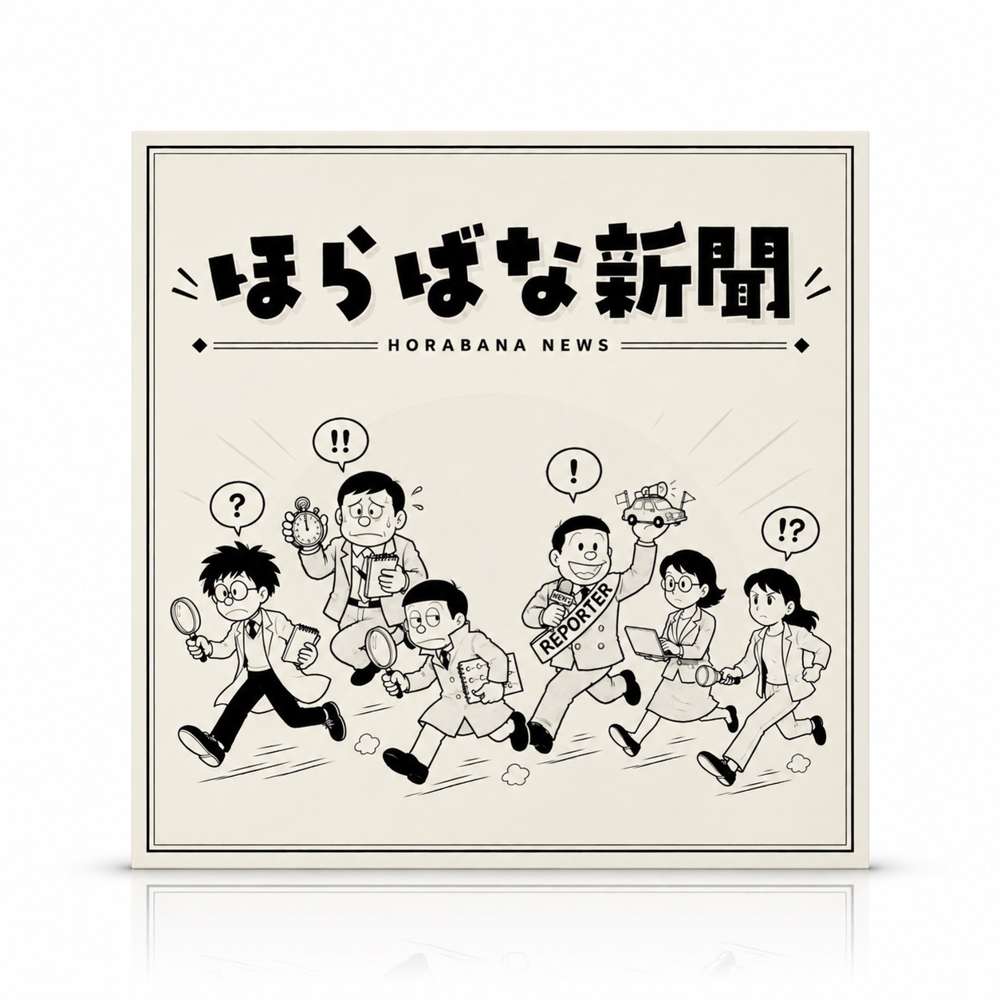
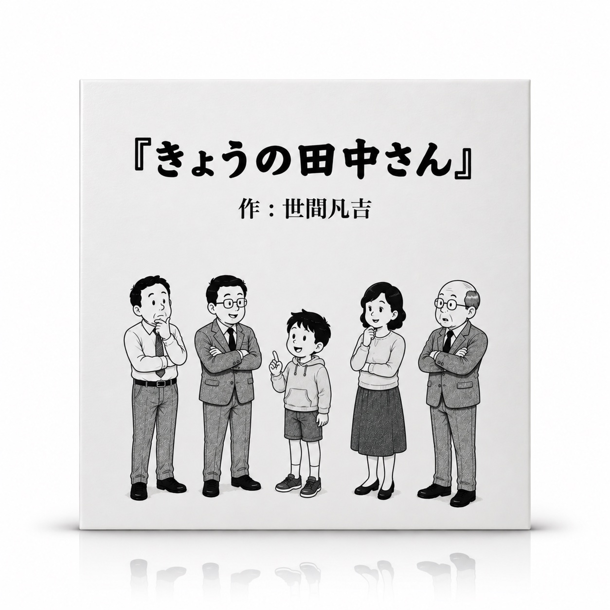
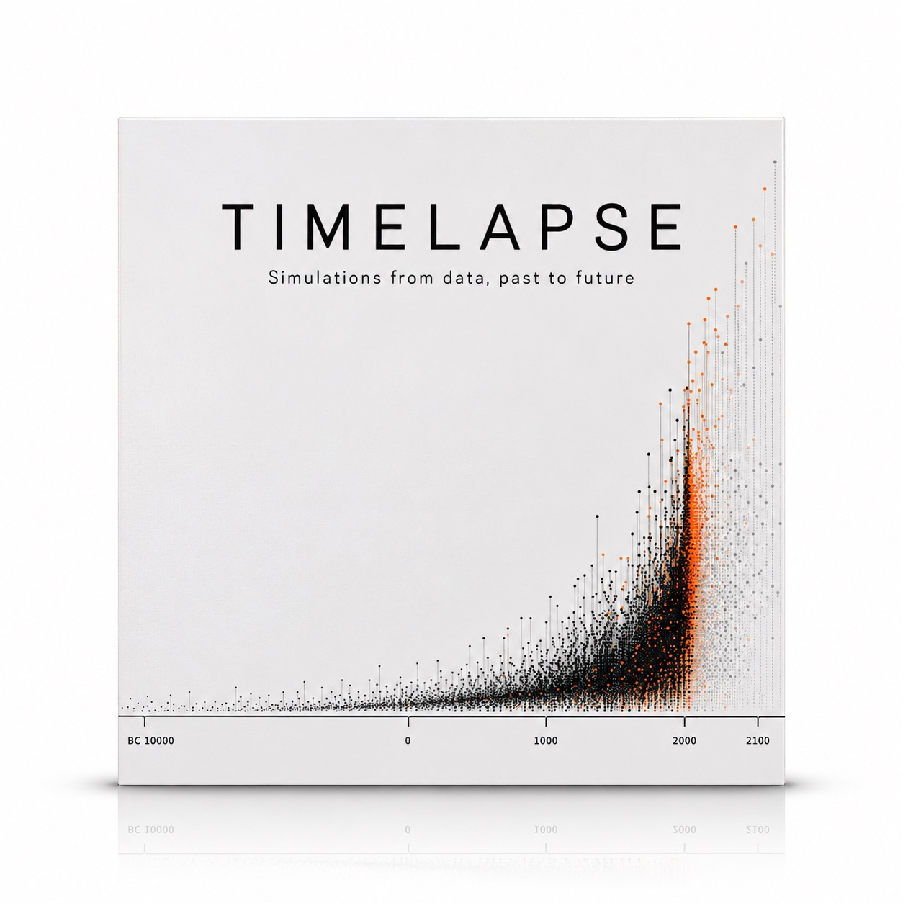
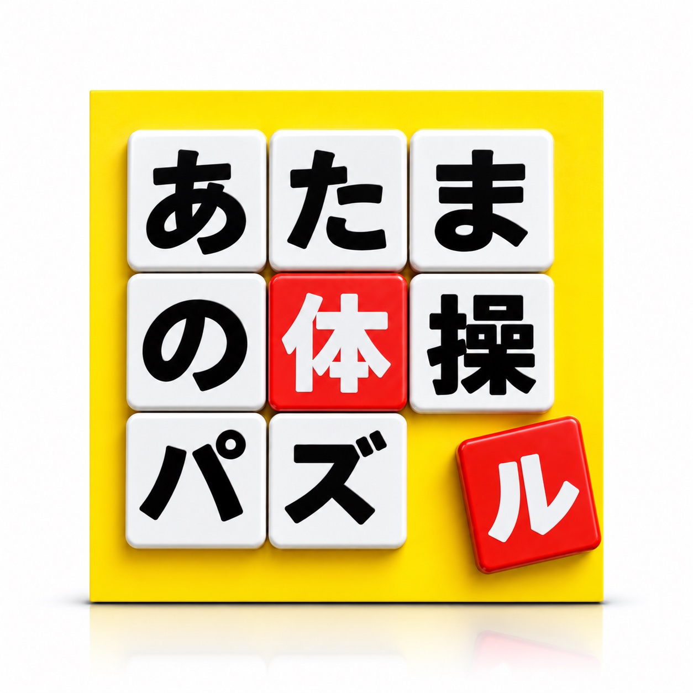
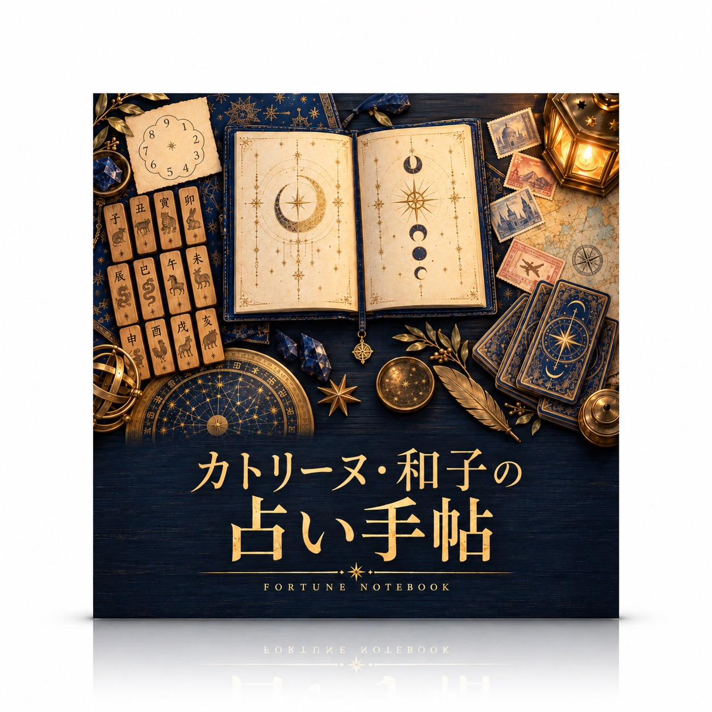
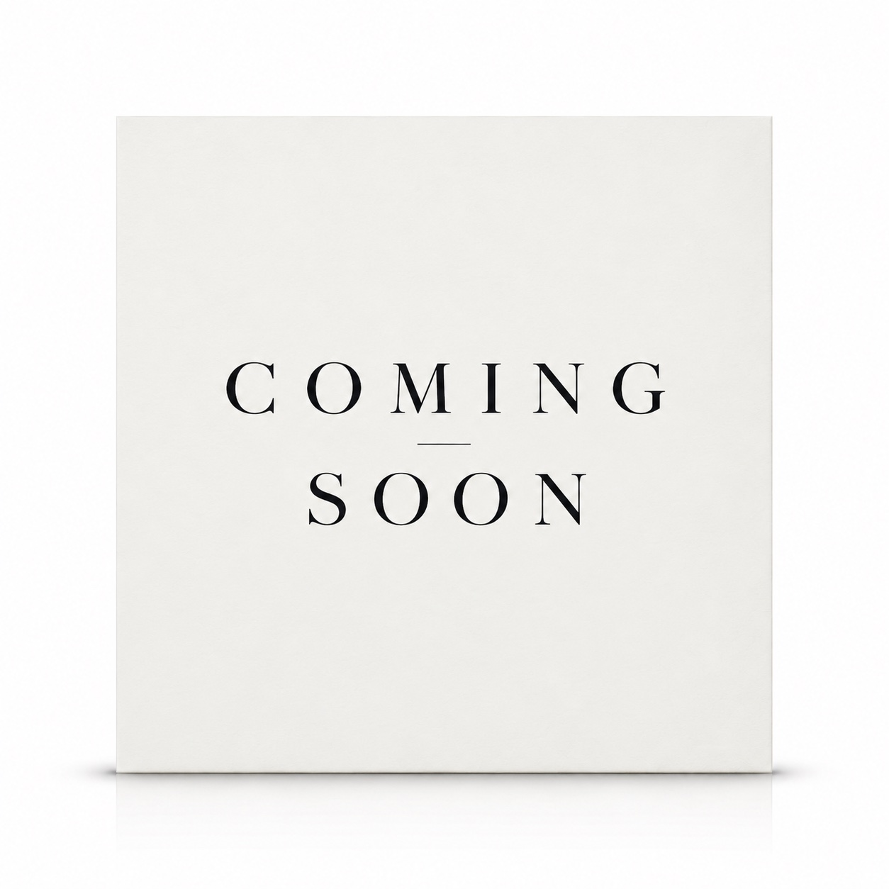

- 2027.05.01ページ「資格試験対策室」を追加
- 2027.05.01ページ「TIMELAPSE」を追加
- 2027.05.01ページ「あたまの体操パズル」を追加
- 2027.05.01ページ「占い手帳」を追加
- 2027.03.01ページ「ASOBIVA LAB」を追加
- 2027.03.01ページ「FILMOGRAPHY」を追加
- 2027.03.01「映画監督・高瀬直人が手がけてきた作品を、予告編でたどる。」を追加
- 2027.01.01ページ「ONE SHOT」を追加
- 2027.01.01ページ「PROJECT SUPANA」を追加
- 2027.01.01ページ「蟲屋Nの昆虫図鑑」を追加
- 2027.01.01ページ「ほらばな新聞」を追加
- 2027.01.01ページ「きょうの田中さん」を追加
- 2027.01.01「写真家・川村明日香が切り取る、街並みや空、光と影、身近な道具たち。」を追加
- 2027.01.01「謎の中学生、蟲屋Nが採集し続ける昆虫の記録。」を追加
- 2027.01.01「クリエイターユニット・ハル&リクが描く、壊れたものこそが価値を持つ、壮大な世界観。」を追加
- 2027.01.01「今日も、ほらばな新聞社の愉快な記者たちが各地で取材を重ねていく。」を追加
- 2027.01.01「昭和風4コマ漫画家・世間凡吉が庶民の日常をゆるく風刺する。」を追加
- 2026.12.01ページ「名を持たぬ哲学者」を追加
- 2026.12.01「作家・朧木周吾郎が静かに書き続ける、言葉にされなかったものの痕跡。」を追加
- 2026.12.01「まだここにいるよ」を追加
- 2026.11.17ページ「ASOBIVAとは？」を追加
- 2026.11.17ページ「0FILE」を追加
- 2026.11.17ページ「絵本コレクション」を追加
- 2026.11.17ページ「〇〇の話」を追加
- 2026.11.17ページ「榊原玄舟の百鬼奇譚」を追加
- 2026.11.17ページ「豆太ピコのゲーム」を追加
- 2026.11.17ページ「福徳神社」を追加
- 2026.11.17「0FILE・1117」を追加
- 2026.11.17「オリバー・フィン・アンデルセンが描く、やさしくも、時に厳しい物語たち。」を追加
- 2026.11.17「民俗画家・妖怪蒐集家の榊原玄舟が、失われゆく妖怪伝承を忠実に描き残していく。」を追加
- 2026.11.17「元編集者・コラムニストの津久井澪の身近なモノにまつわる、ちょっとした豆知識。」を追加
- 2026.11.17「小学生、豆太ピコによるゲーム作品集。」を追加
- 2026.11.17「福徳神社の宮司・春日恒一が守る、小さな神社の占い。」を追加
- 2026.10.20「いつもの道、いつもの朝。マルコは今日も、同じ坂道を歩いていく。」を追加
- 2026.10.18「『なんでも屋オッドジョブズ』セブン」を追加
- 2026.10.18「smooth jazz piano」を追加
- 2026.10.18「a cappella, whistling」を追加
- 2026.10.18「ambient folk waltz」を追加
- 2026.10.18「minimalist piano ballad」を追加
- 2026.10.18「big band swing」を追加
まだ更新はありません
写真家・川村明日香が切り取る、街並みや空、光と影、身近な道具たち。


クリエイターユニット・ハル&リクが描く、壊れたものこそが価値を持つ、壮大な世界観。


今日も、ほらばな新聞社の愉快な記者たちが各地で取材を重ねていく。

昭和風4コマ漫画家・世間凡吉が庶民の日常をゆるく風刺する。


大学生、楠清十郎が集めたデータでたどる、過去から未来までの移り変わり。





旅する占術研究家、カトリーヌ・和子が、各地で確かめてきた技法で読み解く占い。
